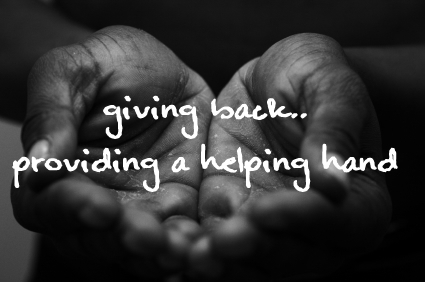

Our Mission
We have as a continuous goal, to provide support, share experiences and supply information to parents, affected children and their siblings. We choose to focus on the individual child and the challenges they may face. We emphasize their abilities, not their disabilities.
In our support work, we often may inform families of regional services and resources that are available, but we do not endorse any specific institution or medical treatment.
One of our priorities is to reach parents of the newborn with an upper limb anomaly. New parents can be given hope and encouragement through our extended network of parents.
Our Philosophy
The philosophy of Helping Hands Foundation is to provide parent-to-parent support and information. Often times, a phone call or email is all it takes to put parents at ease in those early days as they deals with their child's upper limb difference. We are here to listen, answer questions and share our own experiences. Additionally, we offer two (2) family outings each year for the entire family to enjoy. A special bond often develops between parents, affected children and their siblings when families get together to share ideas and experiences. These social events offer an informal atmosphere for parents to meet each other and for children to interact with one another. In addition, relevant topics and issues are addressed through our website and speakers.
Join us to contribute....